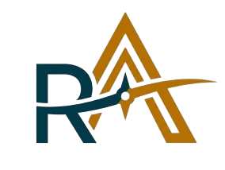

A Rota Aventura convida você a acessar seu Portal e a consultar os Termos e Condições de Uso que regulam sua utilização adequada. A Rota Aventura, uma empresa brasileira registrada de acordo com as leis do país, é responsável pelo controle e operação deste Portal. O conteúdo foi criado para atender clientes atuais e em potencial. O objetivo é fornecer informações significativas tanto para eles quanto para o público em geral, por meio de um painel institucional sobre a empresa. Apenas indivíduos ou entidades jurídicas capazes, em pleno exercício de seus direitos e deveres, conforme a legislação brasileira e demais regulamentações internacionais aplicáveis, poderão adquirir os serviços e produtos anunciados no site da Rota Aventura. POR FAVOR, LEIA COM ATENÇÃO OS TERMOS E CONDIÇÕES AQUI EXPOSTOS, BEM COMO OS DEMAIS AVISOS QUE PODERÃO SER ENCONTRADOS EM OUTRAS PÁGINAS DO NOSSO SITE. AO ACESSAR, VOCÊ CONCORDA COM OS TERMOS E CONDIÇÕES DE USO ESTABELECIDOS. SE NÃO CONCORDAR, NÃO ACESSE ESTE SITE NEM NENHUMA DE SUAS PÁGINAS.
A Rota Aventura está constantemente dedicada a manter as informações em seu site atualizadas e completas, buscando corrigir possíveis imprecisões ou omissões. No entanto, não se responsabilizará pelo uso, aplicação ou processamento por terceiros que não estejam de acordo com a natureza e a função originais fornecidas. Não oferecemos garantias expressas ou implícitas quanto à operação e ao conteúdo, sendo de sua total responsabilidade o uso deste material. Qualquer conteúdo, informação ou conceito que você compartilhe ou insira neste site, exceto dados pessoais ou informações que a lei proteja com sigilo, será considerado não confidencial e não proprietário. A Rota Aventura e suas afiliadas poderão divulgá-lo ou utilizá-lo, inclusive para criar, fabricar e promover produtos. É terminantemente vedado inserir ou transmitir a este site qualquer conteúdo ilegal, ameaçador, calunioso, difamatório, obsceno, escandaloso, pornográfico ou profano, que possa resultar em qualquer responsabilidade civil ou criminal conforme a lei. As informações disponíveis neste site podem ser periodicamente atualizadas ou alteradas; portanto, elas não devem ser consideradas definitivas.
Este site possui textos, fotografias, imagens, logomarcas e sons que são protegidos por direitos de propriedade intelectual, sendo de propriedade da CVC ou licenciados por seus detentores. Ao visitar o site, o usuário afirma que cumprirá os direitos de propriedade intelectual, incluindo os relacionados à proteção de marcas registradas da CVC e os referentes a terceiros. A empresa reafirma o compromisso com os direitos autorais de artigos e notícias, incluindo fotografias reproduzidas. A publicação de imagens de indivíduos - cujas fotos podem estar presentes neste site - tem um caráter puramente informativo, considerando que os eventos em que essas fotografias foram tiradas eram públicos. As fotos e imagens apresentadas neste site podem não representar seu tamanho original ou condição atual do cenário retratado, servindo apenas como ilustrações. Quando se tratar de fachadas ou vitrines de lojas, o usuário não deve considerar qualquer produto ou preço que possa estar presente nelas como válido ou preciso, pois as imagens podem ficar desatualizadas. É vedada a reprodução dos materiais - textos, imagens e gráficos - do site, exceto com autorização prévia por escrito da CVC. O usuário assume total responsabilidade, tanto civil quanto criminal, pelo uso inadequado das informações, textos, gráficos, marcas, obras e quaisquer outros direitos intelectuais ou industriais deste site. Caso você acredite que algum direito esteja sendo violado, seja por meio de textos, artigos, notícias, fotografias ou qualquer outra obra reproduzida no site, envie uma mensagem detalhada com seu nome e telefone de contato para a equipe de Segurança da Informação da CVC, utilizando o e-mail si@cvc.com.br. Dessa forma, poderemos responder diretamente a você. A remoção de nosso Site, caso ocorra em razão de uma reclamação relacionada a artigo, notícia, fotografia ou qualquer outra obra aqui reproduzida, deve ser sempre entendida como uma demonstração de nossa intenção de prevenir conflitos a esse respeito e nunca como um reconhecimento de qualquer violação de direitos de terceiros por nossa parte.